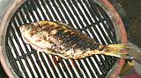

Fish Page
Starting coals
Fusilier Side-1

Fusilier Side-2
Fusilier Served
Grill Tools
Basket
s
Skewers
Chimney Starter
Procedure
- If you're using a marinade, get your fish soaking in it in the fridge. You want about 1/2 hour soak.
- If using charcoal, get your fire going - you want it stable and medium hot. Use a chimney starter and pour when the coals are red all the way to the top.
- Make sure the grate is clean and oil it well but not dripping. Put it over the fire in enough time for it to become as hot as it's going to get - 15 minutes or so. Fish will stick to a cool grate.
- Make sure your fish is ready and dry. If it's been marinading clean off all marinade it hasn't absorbed and dry.
- If you're going to use that extra marinade get it into a saucepan and bring it to a high simmer for about 5 minutes.
- Brush both sides of the fish well with olive oil.
- Give your grate a last brushing with oil using a long handled brush.
- Set the fish on the grate. Don't try for a cross grill pattern with a whole fish, you'll probably just break it up.
- At about 1/2 done time flip the fish over and finish cooking. Do not turn the fish again or you risk breaking it up.
- Serve with the good side up (that may not be the side you intended to be the good side).
Grilling Time Table
Caution!
These times are tight. It takes 45 standard Kingsford briquettes at their peak hotness to meet these times on my tiny Indonesian pot grill. Larger machines will take more. Err a little on the long side until you know your grill with precision. A fish with a couple extra minutes will still be fine but an undercooked fish is not at all fine.| Fire Medium Hot for All Selections | |||
|---|---|---|---|
| Fish Form | Size | Grilling Time | Done When |
| Whole Fish | 1/2# to 1-1/2# | 6 to 9 minutes per 8 ounces | Flakes |
| Fillets, Steaks, Cubes | 1/2" to 1" thick | 4 to 6 minutes per 1/2" thickness | Flakes |
| Shrimp (on skewer) |
Medium (20 / pound) Large (12 to 15 / pound) |
5 to 8 minutes 7 to 9 minutes | Opaque |
| Scallops (on skewer) | 12 to 15 / pound) | 5 to 8 minutes | Opaque |
| Lobster Tails | 6 ounces 8 ounces |
6 to 10 minutes 12 to 15 minutes | Opaque |
Hints
Know Your Fish:
Hints for many kinds of fish are linked from our Varieties of Fish page on the "Details and Cooking" pages for individual kinds of fish. Some kinds of fish and fillets stay firm and manageable while others stick and break up.- For grilling steaks and fillets you want a fairly oily fish with solid flesh. Choose fish with enough flavor to stand up to the fire and smoke. Tuna, Swordfish, Salmon, Halibut, Mackerel and Shark steaks work well directly on the grill.
- For whole fish oiliness is not so important, but holding together well and not being too thick are.
- Fillets and steaks should be at least 1/2 inch thick or they will dry out and be like boards. They should be no more than 1 inch thick or they will char before being done through. Tender fillets such as flounder (sole), snapper, perch and catfish would benefit from using a grilling basket (see "Tools" below).
Oil:
Use a high temperature oil - Olive Pomace has a high smoke point and little olive flavor so it won't overpower your fish. Don't use Extra Virgin or any other "unrefined" oil - they can't stand the heat.Grill:
Use a medium hot grill. Too hot and you'll char the outside before the fish are done in the center - too cool and they'll take too long and not get any char lines on the outside.- Flip your fish over only once or it'll likely break up.
- If your fish just didn't get quite done, put it on a microwave safe plate and nuke it for 1 to 2 minutes.
- Shrimp and shellfish should be on metal or water soaked bamboo skewers or done in a deep grilling basket (the kind used for vegetables). If clams or mussels are done in the shell they should be put directly on the hottest part of the grill. They're done when they open (any that aren't open in 5 minutes might be bad - or might not. Prying them open and sniffing is the only way to tell.
Marinade:
If you marinate fish, let them soak up the marinade for about 1/2 hour in the refrigerator. Fish spoil fast - don't leave them out. If you use leftover marinade for a sauce bring it to a high simmer for 5 minutes in a saucepan to make sure it's safe - it's been exposed to raw fish
Tools
A Grill:
the primitive Indonesian clay pot grill shown above will do fine, but the more primitive the grill the greater skill is required in building and regulating the fire. On the other hand, eighteen hundred dollar gas fired monsters with high tech controls are like huge pickup trucks, "enhancement devices" for men with "size insecurities".Basting Brush:
useful for oiling that grill just before putting the fish down on it. Any non-melting (cotton string or natural bristle) brush will work so long as it has a long enough handle and you work quickly.Grill Fork:
This two pronged device can get down between the grate rods to lift things that are a little stuck.Turner:
as for all other methods of cooking fish it needs to be slotted, very thin and flexible (but well made enough it isn't going to break at some critical moment).Fish Turner:
The one shown looked like a great idea but was remarkably efficient at destroying fish, until I walked up to a bench grinder and ground the front edge from the bottom until it's tapered to almost a knife edge. Better to find a very thin flexible one.Fish Basket:
a useful device for fillets. Particularly good for your more delicate fish. Most are way too shallow for a whole fish,Grill Basket:
often used for small vegetables, it's also good for shellfish.Skewers
for grilling shrimp, shellfish and fish cubes should be flat metal ones (food often spins on round ones when you're trying to turn it) or wooden skewers that have been soaked 1/2 hour in warm water. Wood skewers can still char if the fire is too hot or the cooking too long. Gimmicky skewers almost always disappoint, stick with plain.Chimney Starter:
the best way to get your charcoal burning properly, and avoids any noxious and unreliable starter chemicals that will linger and contaminate your food.